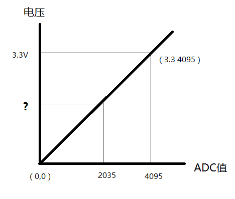

如何利用单片机的 ADC 模块（或者独立的 ADC 芯片）得到接入 ADC 管脚上的实际电压值？ 这个问题，是第一次接触 ADC 时候，大家都会遇到的问题。
单片机会读到什么值？ 需要看一个特性，就是几位的 ADC，在手册上就会给出，例如，STM32 的 ADC 是 12 位的。另外，还有 8 位，10 位，16 位，24 位等。
我先告诉你答案：STM32 读到的 ADC 值，是从 0 到 4095，当你把 ADC 引脚接了 GND，读到的就是 0，当你把 ADC 引脚接了 VDD，读到的就是 4095。
接下来告诉你为什么：前面提到，STM32 的 ADC 是 12 位的，我们知道，8 位的值是从 0 ~ 255；16 位的值，是从 0 ~ 65535。这两个位的最大值，是我们最为熟悉的。
（怎么算出来的？这问题就又降低到另一个层面了，这里我们说的几位的值，每个位只能是 0 或者 1，比如 2 位的值，可以表示为 00 01 10 11 四种不同的值，这是以 2 进制表示的，转换成十进制就是 0 1 2 3，所以得出结论，2 位的值可以表示从 0 ~ 3。同理，3 位的值，可以表示十进制的 0 ~ 7，你可以展开计算一下。4 位的值，可以表示 0 ~ 15，5 位的值，可以表示从 0 ~ 31，同理，你可以得出任意位的值可以表示的范围。）
所以，12 位的值，可以表示从 0 ~ 4095（2^12），这就是先在感性上，认识了为什么 12 位的 ADC 的值，是从 0 ~ 4095。
读到的值怎么换算成实际的电压值？
前面提到了，我们输入 GND，读到的值是 0，输入 VDD，得到的值是 4095，那么，当你读到 2035 的时候，你知道输入电压多少 V 吗？这个问题，归根接地，就到了数学 XY 坐标，已知两点坐标值（0, 0）（3.3, 4095），给出任意 X 坐标值，求 Y 值的问题了吧？简单不简单？
ADC 测电压示意图：

参考电压是什么？
讨论这个问题之前，你先拿万用表量一下你的 VDDA 的实际电压是多大？是不是标准的 3.300V？应该不是吧？或许是 2.296V，或许是 3.312V。然后你把 VDD 连接到 ADC 引脚之后，得到的是 4095，也就是，实际上，当你读出 4095 这个数据的时候，实际的电压值不是你想象中的 3.300V。有些初学者，觉得几毫伏的电压差无所谓，但实际应用中，几毫伏就可能代表很大的实际工况，例如，在一个量程为 50 克的电子称上。
所以，这时候，芯片厂商就想了一个办法，给 ADC 模块中引入参考电压，由非常标准的参考电压芯片来接入参考电压引脚。标准的电压芯片，我们一般叫做参考电压芯片，或者叫做基准电压芯片。例如 REF3133（输出 3.300V） REF3025（输出 2.500V）等等。
注意：STM32 的 100 脚以上（含 100 脚）有参考电压引脚。在没有参考电压引脚的单片机上，可以把基准电压芯片接入 VDDA，但是 VDDA 和 VDD 的电压差不能超过 0.3V，例如，VDD 是 3.3V 的话，可以给 VDDA 接入一个 3.3V 的参考电压芯片或者 3.0V 的参考电压芯片，但是不能接入 2.5V 的参考电压芯片，后果就是芯片不能工作。
ADC 引脚的输入电压范围是多大
一般情况下，ADC 引脚的输入电压，是从 0 ~ VDD，如果有 REF 引脚，一般是 0 ~ Vref，也有 0 ~ 2Vref 的情况。
如果被测的电压大于 ADC 的输入电压，例如，要用 STM32 测量 0 ~ 5V 的电压的话，可以在输入 ADC 引脚之前，加入电阻分压和放大器电路。
注意：如果用内部基准电压作为参考基准，公式就跟用外部芯片供电电压测量有点不同
#define REF_VOLTAGE 1224UL // 基准电压千倍
#define VOLTAGE 3300UL // 电压千倍
#define ADC_DIP(X) (X) // ADC分辨率
一般我们用外部芯片供电电压为参考基准就用下面那个公式，也就是上面说的 XY 比例
Voltage_value = (uint32_t)(ADC_value*VOLTAGE >> ADC_DIP (12)); // 换算成千倍的电压值
若用内部基准电压作为参考则用以下公式
Voltage_value = (uint32_t)((REF_VOLTAGE << ADC_DIP (12)) / ADC_value); // 换算成千倍的电压值
内置的参照电压看芯片的 datasheet；外部芯片供电电压最好用万用表测一下